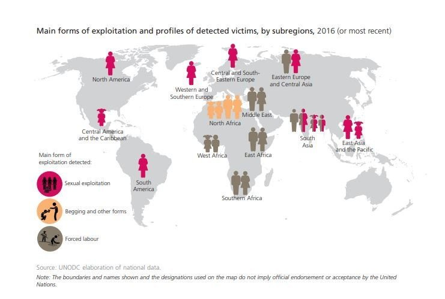
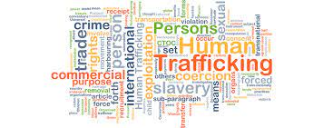

Many myths and misconceptions can arise about the indicators of human trafficking one of the most important things to remember is the safety of the public is most important and only law officials. Check out below, visit dhs.gov
Considering Human trafficking is worldwide and individuals are forced into labor, traffickers benefit at the exploitation of vulnerable people.This is an everyday national and economic security issue that has forced action upon organizations like ours to provide the truth about trafficking of persons. Statistically, and estimated 24.9 million victims are worldwide at any time, while traffickers prey on adults and children of all backgrounds specifically ages 19-35 at the highest rate. Find statistics here, visit Department of State. gov
